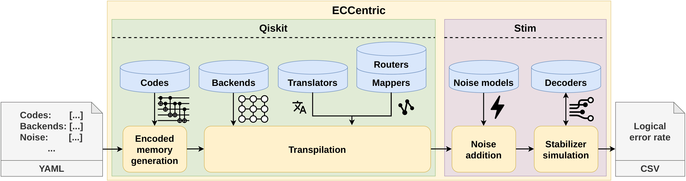

The ECCentric Framework
To experimentally explore our research questions while systematically exploring the important parameters, we require a high-performance and modular framework that incorporates different compilation stages, topology constraints, and detailed noise models. ECCentric is our dedicated, fully modular, extensible framework for systematic evaluation of QEC codes.

Figure: The end-to-end benchmarking pipeline of ECCentric.
Key Components
- Encoded Quantum Memory Generation: Supports arbitrary error-correction rounds and flexible code distances for major QEC families (Surface, Color, Bacon-Shor, Heavy-hex, Gross, Concatenated Steane).
- Transpilation:
- Translation: Transpiles circuits to native gate sets using high-performance SDKs (Qiskit, TKET, BQSKit).
- Mapping and Routing: Adapts circuits to target device topologies (Willow, Apollo, Infleqtion, Flamingo) while exploring layout and routing strategies.
- Noise Addition: Injects gate-by-gate noise, including idle noise, leakage, crosstalk, readout errors, and shuttling errors.
- Stabilizer Simulation: Efficiently samples physical error propagation using Stim and infers corrections via general-purpose decoders (BP-OSD, MWPM).
By integrating these stages, ECCentric allows for a holistic assessment of how various factors—from compiler choices to hardware connectivity—influence final logical error rates.